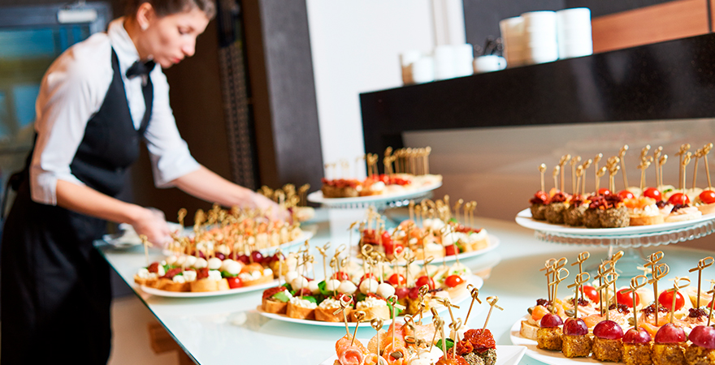

info@cateringtmusje.com
Catering 't Musje
Servicios de Catering para Eventos

Bienvenidos a Catering 't Musje', donde cada evento se convierte en una celebración memorable.
En Catering 't Musje', entendemos que cada evento es único y merece una atención especial. Por eso, nos enorgullecemos de ofrecer servicios de catering personalizados que se adaptan a tus necesidades y superan tus expectativas. Desde eventos íntimos hasta grandes celebraciones, nuestro equipo está dedicado a proporcionar una experiencia culinaria excepcional.
¿Qué Ofrecemos?
1. Menús Personalizados:
Creemos que la comida es una parte esencial de cualquier evento. Nuestro chef y equipo de cocina trabajarán contigo para crear un menú a medida que refleje tu estilo y preferencias. Desde canapés y aperitivos hasta platos principales y postres, cada detalle será cuidadosamente planificado y preparado con ingredientes frescos y de alta calidad.
2. Servicio Profesional:
Nuestro personal de servicio está altamente capacitado para brindar un servicio impecable y profesional. Nos encargamos de todo, desde la presentación y el servicio de los alimentos hasta la limpieza, para que puedas relajarte y disfrutar de tu evento sin preocupaciones.
3. Opciones para Todos los Gustos:
Ofrecemos una amplia variedad de opciones culinarias para satisfacer todos los gustos y necesidades dietéticas, incluyendo opciones vegetarianas, veganas, sin gluten y más. Nuestro objetivo es asegurarnos de que todos tus invitados disfruten de una experiencia gastronómica deliciosa.
4. Eventos de Todo Tipo:
Ya sea una boda, un cumpleaños, una reunión corporativa o cualquier otra ocasión especial, Catering 't Musje' está aquí para hacer que tu evento sea inolvidable. Nos especializamos en eventos de todos los tamaños y tipos, adaptándonos a tus requerimientos específicos para ofrecerte un servicio de catering perfecto.
5. Calidad y Compromiso:
Nuestro compromiso con la calidad es inigualable. Utilizamos solo los mejores ingredientes y técnicas culinarias para garantizar que cada plato sea una obra maestra. Nuestro equipo está comprometido a ofrecer un servicio de excelencia en cada aspecto de tu evento.
¿Por Qué Elegirnos?
En Catering 't Musje', no solo preparamos comida; creamos experiencias. Nos enorgullecemos de nuestro enfoque personalizado y nuestra dedicación a superar las expectativas de nuestros clientes. Confía en nosotros para hacer que tu evento sea un éxito rotundo con un catering que impresiona y deleita.
Contáctanos hoy para discutir tus necesidades y comenzar a planificar el catering perfecto para tu próximo evento. ¡Estamos ansiosos por hacer de tu celebración un momento verdaderamente especial!